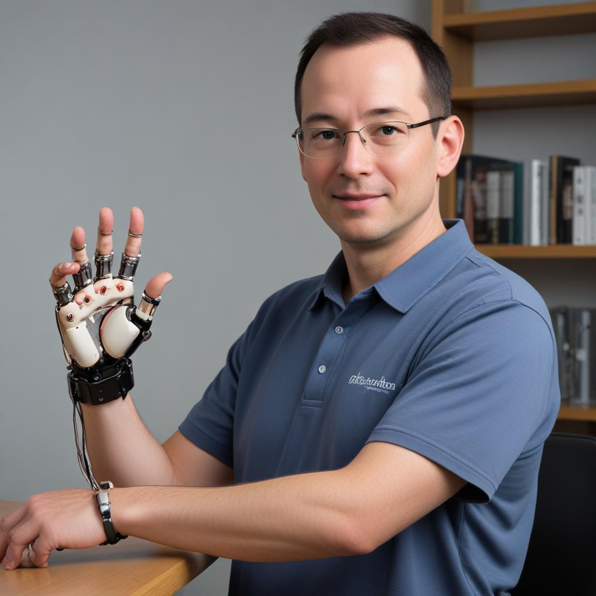

History
TechCon's roots can be traced back to a small gathering of tech enthusiasts in 1998. These pioneers envisioned a space for collaboration and knowledge sharing within the rapidly evolving tech industry.
The first official TechCon conference took place in 2000, attracting a few hundred attendees. Over the years, it has grown exponentially into a global phenomenon, bringing together thousands of tech leaders, innovators, and aspiring minds.
Throughout its journey, TechCon has witnessed and been a part of groundbreaking advancements in various tech fields. From the rise of personal computers to the development of artificial intelligence, the conference has consistently served as a platform for unveiling cutting-edge ideas and fostering connections within the tech community.
Mission
TechCon's mission is to empower the tech revolution by providing a platform for inspiration, education, and collaboration.
The conference strives to:
Gather the brightest minds: TechCon aims to bring together leading researchers, developers, entrepreneurs, and industry experts to share their knowledge and experiences.
Spark Innovation: By fostering a collaborative environment, TechCon hopes to ignite new ideas and inspire the next generation of tech pioneers.
Bridge the Gap: The conference serves as a bridge between academia and industry, facilitating knowledge transfer and real-world application of technological advancements.
Empowering Tech for Good: TechCon is committed to promoting the responsible development and ethical use of technology for a better future.
Dr. Alice TechVisionary
Dr. Alice TechVisionary is a renowned computer scientist and futurist. She is a pioneer in the field of artificial intelligence and has made significant contributions to machine learning algorithms. Dr. TechVisionary is a regular keynote speaker at major tech conferences and is admired for her insightful predictions about the future of technology.
Mr. Robohand Engineer

Mr. Robohand Engineer is a leading innovator in prosthetics and biomechanics. He is the founder of a company that develops advanced prosthetic limbs that integrate seamlessly with the human nervous system. Mr. Engineer's work has revolutionized the lives of amputees, restoring functionality and improving their quality of life.